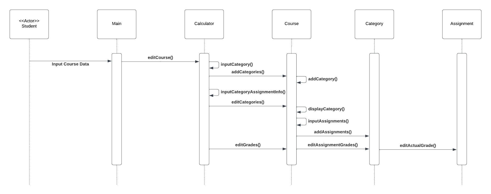
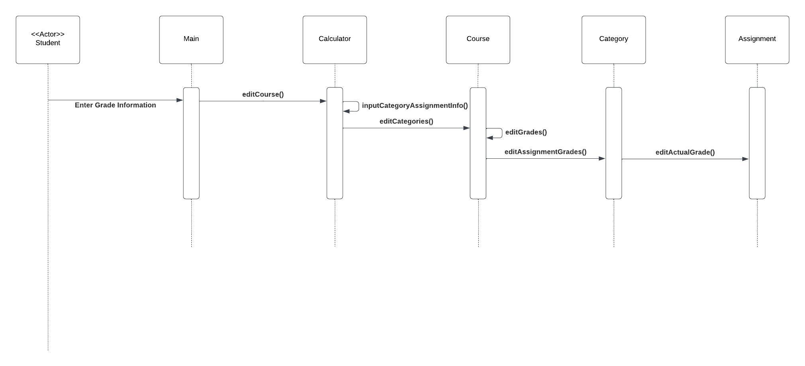
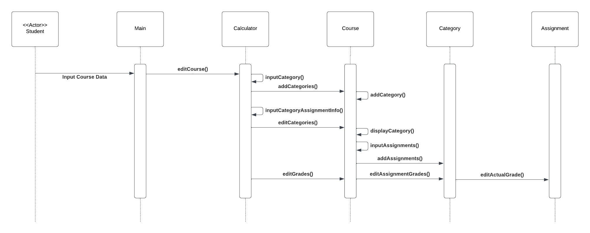
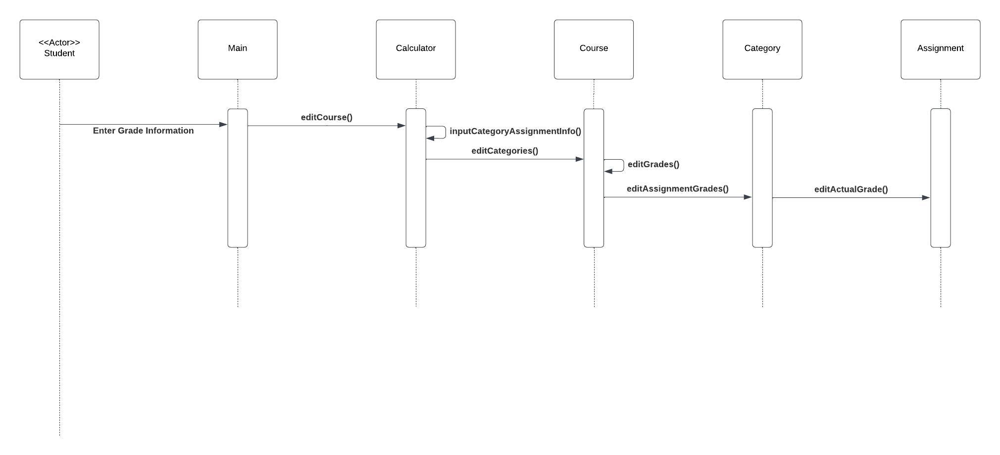

<- Projects / Software Engineering Projects / Course Project
// This project was completed May 2024
About {
This project followed the waterfall software development approach, involving key steps such as stakeholder meetings, requirements gathering, developing class and sequence diagrams, designing a test plan, and, ultimately, building the final product.
This project was completed over four weeks, with the first two weeks dedicated to meeting stakeholder requirements and the remaining two weeks focused on building the system.
The final product was a grading calculator, thoughtfully designed to meet the specific requirements of the stakeholders.
}
Stage 1 (Requirements, Week 1) {
In this stage, I met with stakeholders to discuss their precise requirements for the system. The key requirements identified were:
- The user can input multiple categories, and assignments within those categories
- The user can input multiple courses
- The user can reload previously saved data
- The user can dictate rounding criteria
}
Stage 2 (Class Diagram, Week 1) {
This stage focused on developing a class diagram to guide the functionality of the project, ensuring it aligned with the stakeholders’ requirements.
This class diagram was created using Lucid Chart.
}
Stage 3 (Sequence Diagrams, Week 2) {
In this stage, I created sequence diagrams to outline the flow of events for each specific requirement, ensuring they adhered to the stakeholders’ expectations.
These sequence diagrams were created using Lucid Chart.
}
 



Stage 4 (Test Plan, Week 2) {
This stage involved developing test cases for each stakeholder requirement. Each test case included sections for the associated requirement, prerequisites, a detailed procedure, the expected outcome, pass criteria, and a summary.
}
Stage 5 (Create the Product, Week 3, Week 4) {
This stage centered on building the project in alignment with stakeholder requirements, as well as the established class and sequence diagrams.
This system was created using the IntelliJ IDEA IDE, in Java, and is available to download via the link below.
return (Download the Project Code);
}